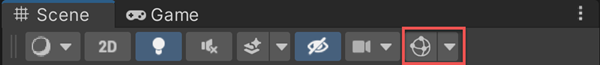
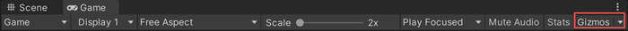

The Scene viewAn interactive view into the world you are creating. You use the Scene View to select and position scenery, characters, cameras, lights, and all other types of Game Object. More info
See in Glossary and the Game view both have a GizmosA graphic overlay associated with a GameObject in a Scene, and displayed in the Scene View. Built-in scene tools such as the move tool are Gizmos, and you can create custom Gizmos using textures or scripting. Some Gizmos are only drawn when the GameObject is selected, while other Gizmos are drawn by the Editor regardless of which GameObjects are selected. More info
See in Glossary menu. Click the Gizmos button in the toolbarA row of buttons and basic controls at the top of the Unity Editor that allows you to interact with the Editor in various ways (e.g. scaling, translation). More info
See in Glossary of the SceneA Scene contains the environments and menus of your game. Think of each unique Scene file as a unique level. In each Scene, you place your environments, obstacles, and decorations, essentially designing and building your game in pieces. More info
See in Glossary view or the Game view to access the Gizmos menu.


| Property | Function |
|---|---|
| 3D Icons | The 3D Icons checkbox controls whether component icons (such as those for Lights and Cameras) are drawn by the Editor in 3D in the Scene view. When the 3D Icons checkbox is ticked, component icons are scaled by the Editor according to their distance from the Camera, and obscured by GameObjects in the Scene. Use the slider to control their apparent overall size. When the 3D Icons checkbox is not ticked, component icons are drawn at a fixed size, and are always drawn on top of any GameObjects in the Scene view. Refer to Gizmos introduction for more information. |
| Fade Gizmos | Fade out and stop rendering gizmos that are small on screen. |
| Selection Outline | Check Selection Outline to display selected GameObjects with a colored outline, and their children with a different colored outline. By default, Unity highlights the selected GameObject in orange, and child GameObjects in blue. NOTE: This option is only available in the Scene view Gizmos menu; you cannot enable it in the Game view Gizmos menu. Refer to Selection Outline and Selection Wire, for more information. |
| Selection Wire | Check Selection Wire to show the selected GameObjects with their wireframe Mesh visible. To change the colour of the Selection Wire, go to Edit > Preferences (macOS: Unity > Settings) in the main menu, select Colors, and alter the Selected Wireframe setting. This option is only available in the Scene view Gizmos menu; you cannot enable it in the Game view Gizmos menu. Refer to Selection Outline and Selection Wire, for more information. |
| LOD Labels | Displays the level of detailThe Level Of Detail (LOD) technique is an optimization that reduces the number of triangles that Unity has to render for a GameObject when its distance from the Camera increases. More info See in Glossary (LOD) level index number when you select a GameObjectThe fundamental object in Unity scenes, which can represent characters, props, scenery, cameras, waypoints, and more. A GameObject’s functionality is defined by the Components attached to it. More info See in Glossary. For more information, refer to Optimize mesh rendering using LOD. |
| Display Weights | When enabled, Unity draws a line from the Light Probe used for the active selection to the positions on the tetrahedra used for interpolation. This is a way to debug probe interpolation and placement problems. |
| Display Occlusion | When enabled, Unity displays occlusion data for Light Probes if the Lighting Mode is set to ShadowmaskA shadowmask texture uses the same UV layout and resolution as its corresponding lightmap texture. More info See in Glossary. |
| Highlight Invalid Cells | Enable to highlight tetrahedrons that Unity can’t use for indirect lighting. For example, if the Light Probes are very close together. |
| Recently Changed | Controls the visibility of the icons and gizmos for components and scripts that you modified recently. This section appears the first time you change one or more items, and updates after subsequent changes. For more information, refer to Built-in components, scripts, and recently changed items. |
| Scripts | Controls the visibility of the icons and gizmos for scripts in the Scene. This section appears only when your Scene uses scripts that meet specific criteria. For more information, refer to Built-in components, scripts, and recently changed items below. |
| Built-in Components | Controls the visibility of the icons and gizmos for all component types that have an icon or gizmo. For more information, refer to Built-in components, scripts, and recently changed items. |
Select which Light ProbesLight probes store information about how light passes through space in your scene. A collection of light probes arranged within a given space can improve lighting on moving objects and static LOD scenery within that space. More info
See in Glossary to display in the Scene view. The default value is Only Probes Used By Selection.
| Property | Function |
|---|---|
| Only Probes Used By Selection | Display only Light Probes that affect the current selection. |
| All Probes No Cells | Display all Light Probes. |
| All Probes With Cells | Display all Light Probes, and the tetrahedrons that Unity uses for interpolation of Light Probe data. |
| None | Display no Light Probes. |